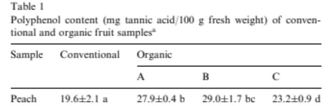

És millor el préssec ecològic o convencional?
He buscat a Google acadèmic
He trobat dos articles Gogle acadèmic. i Google acadèmic. escrit per Marina Carbonaro et al. (2001 i 2002) que analitza si hi ha diferència entre el préssec convencional i el préssec ecològic pel que fa el contingut de nutrients. He buscat a l'apartat de resultats, poso les imatges de les taules a continuació:

A la taula de dalt, podem observar l'anàlisis de l'activitat PPO (polifenoloxidasa) i el contingut total de polifenols en els préssecs. Pel que fa a l'àcid cafeic, els préssecs convencionals tenen una activitat lleugerament superior de PPO, tot que no és molt significativa. D'altre banda, en l'àcid clorogènic, podem observar que els préssecs orgànics mostren una activitat de PPO més alta que els convencionals. En el cas dels catecols, no es va detectar (nd) en cap de les mostres que es va fer en els préssecs. Quan observem el contingut total de polifenols (mg àcid tànic/100 g f.w), podem veure que els préssecs orgànics tenen un valor més elevat que els convencionals, amb una diferència de P<0.05. Aquest major contingut de polifenols està relacionat amb un augment del potencial antioxidant, per tant, ens està demostrant que els préssecs orgànics són millor que els convencionals, ja que els polifenols són uns compostos naturals que es troben als aliments i tenen uns efectes molts beneficiosos per a la nostra salut i tenen un potencial elevat en la prevenció de malalties.
En la imatge de dalt, hi ha una altra taula que ens demostra que els préssecs orgànics són millors que els convencionals. La taula mostra el contingut de polifenols mesurats en mg d'àcid tànic per 100g de pes fresc. A la taula podem veure que els tres préssecs orgànics (A, B i C) contenen més quantitats de polifenols que el convencional, per tant, els préssecs orgànics són millors.


A la primera imatge de dalt podem observar dues gràfiques que ens mostra el contingut d'àcid ascòrbic (vitamina C) i àcid cítric que conté els préssecs. A la primera gràfica de la primera imatge, podem observa que els préssecs convencionals conten menys àcid ascòrbic que els préssecs orgànics, al igual que, a la segona gràfica de la primera imatge, també, podem observa que els préssecs orgànics contenen més àcid cítric que els convencionals. Per tant, aquestes gràfiques ens demostra que els préssecs orgànics són més nutritius, ja que contenen més vitamines que els convencionals.
A la segona imatge de dalt, es pot observar una altra taula que demostra que els préssecs orgànics són millor que els convencionals. Aquesta, compara un préssec convencional amb tres orgànics (A, B i C). Encara que observem que els préssecs orgànics B i C tenen menys àcid cefeic i àcid clorogènic, es pot obervar que els orgànics continuen sent millor que els convencionals, ja que el préssec orgànic A conté més àcid cafeic i àcid clorogènic que el préssec convencinal. Com hem dit abans, quan més àccid té un préssec, vol dir que té major quantitat d'oxidació de polifenols, i com, això porta efectes beneficiosos per a la nostra salut, és millor. L'àcid cafeic és un compost ogànic que pertanya a la família dels polifenols, concretamet els àcids hidroxicinàmics i té propietas antiinflamatòries. I l'àcid clorogènic és un altre tipus de polifenol, és conegut per les seves propietats antioxidants. Gràcies a aquestes dades, podem observar que els préssecs orgànics són millor que els convencionals.
Conclusió: Els préssecs orgànics són una millor opció que els préssecs convencionals, ja que són més nutritius i saludables, ja que contenen més àcids (vitamines) i polifenols, i això són compostos que ajuden al benestar de la salut, per tant, són millors els préssecs orgànics.